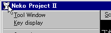
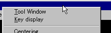
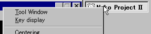

システムメニューって何？
常に表示されているメニューバーのものとは別のメニューです。
システムメニューをアクティブにするには…
|  |  |  |
| アイコンをクリック | キャプション上で右クリック | タスクバーで右クリック |
キーボードでは ALT, F10キーのメニューバーよりアイコンを選択、もしくはALT+SPACEでもアクティブにすることができます。
しかし、ねこープロジェクトIIのエミュレーションウィンドウは これらのキーをエミュレーション側へ通知してしまう為にこれらのキーを使用してシステムメニューをアクティブにすることができません。
F11キーでメニューバーをアクティブしてシステムメニューを選択してください。
使用できるウィンドウショートカットキー
原則として 他アプリケーションとの切替えキー以外は エミュレーション側へ通知するために利用できません。
| キー操作 | 機能 |
|---|---|
| ALT+TAB (Shift+ALT+TAB) | アプリケーションの切替え |
| CTRL+ESC | スタートメニューを開く |
| Shift+CTRL+ESC | タスクマネージャを開く(WindowsNT) |